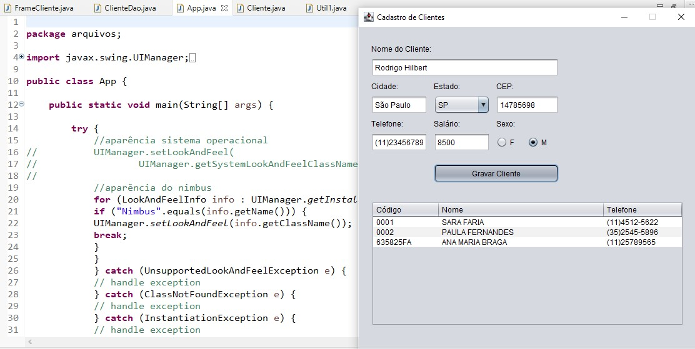

LIMA
Linguagem de Marcação
Digitar aqui o texto que eu quero
Projeto realizado nas aulas de LIMA, baseado na série Cidade Invisível. Clique na imagem para ver na íntegra.
Projeto sobre comida, realizados durante as aulas. Clique na imagem para ver na íntegra.
SOP
Sistemas Operacionais
Disciplina que aborda os conceitos básicos sobre os sistemas operacionais, aprendemos realmente a mexer em um computador e utilizar algumas ferramentas de editor de texto e planilhas.
Você realmente sabe o que é um sistemas operacional? Assista o vídeo do canal 'Portal Web Tec Tutoriais' para entender mais sobre esse assunto.
Passo a passo da instalação do Windows 10, com 2GB (ou 2048MB) de memória RAM e 50GB de HD.
Tudo o que aprendemos durante esse 1º semestre na disciplina de SOP.
FPOO
Fundamentos de Programação Orientada a Objetos
Digitar aqui o texto que eu quero
Digitar aqui um texto explicando as imagens/ projetos
HARE
Hardware e Redes
Digitar aqui o texto


Comunicação entre os computadores para a transmissão de dados
Peças físicas dos computadores.